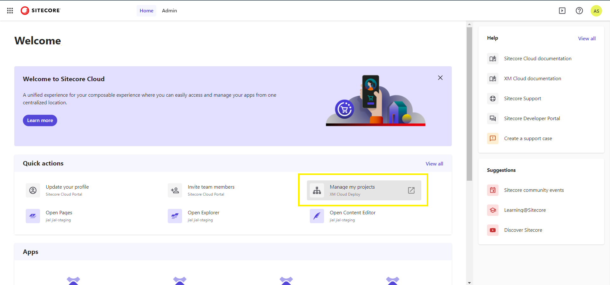
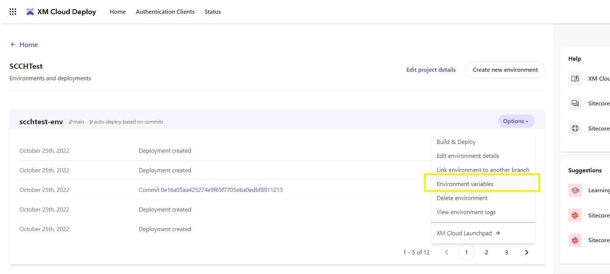

Walkthrough: Enabling the CMP connector in XM Cloud on Sitecore Cloud Portal
How to enable the Sitecore Connect for Content Hub connector to Sitecore Digital Asset Management in XM Cloud on Sitecore Cloud Portal.
To use Sitecore Content Management Platform (CMP) in your Sitecore XM Cloud on Sitecore Cloud Portal, you must configure and enable the CMP connector.
This walkthrough describes how to:
Configure the CMP connector
Enable the CMP connector
Configure the CMP connector
In Sitecore Cloud Portal, in the Quick Action section, click Manage my projects. Create a new XM Cloud project or click on an existing project.
 Click Options, then click Environment variables.
 Enter the following variables:
Variable
Value
Sitecore_ConnectionStrings_CMP_dot_ContentHubClientId={client_id};ClientSecret = {client_secret};UserName={username};Password={password};URI={uri};
Sitecore_ConnectionStrings_CMP_dot_ServiceBusEntityPathIn{Azure Service Bus connection string with incoming topic}
Sitecore_ConnectionStrings_CMP_dot_ServiceBusSubscription{Subscription name}
Sitecore_ConnectionStrings_CMP_dot_ServiceBusEntityPathOut{Azure Service Bus connection string with outcoming topic}
Enable the CMP connector
By default, when you deploy Sitecore XM Cloud the CMP connector is disabled.
To enable the connector:
In Sitecore Cloud Portal, navigate to your XM Cloud project. In the Options section, click Environment variables.
Add the variable
SITECORE_AppSettings_cmpEnabled__defineand set it to yes.